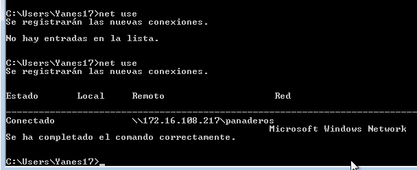
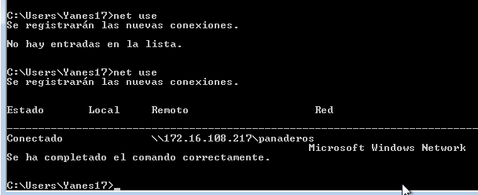
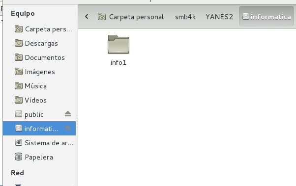
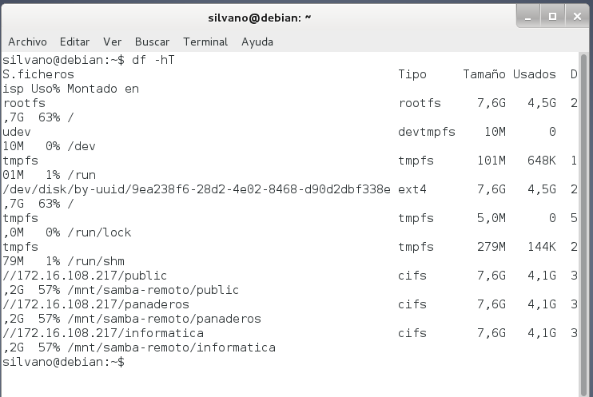

- Módulo: Administración de sistemas operativos
- Título del trabajo Samba
- Componentes del grupo: Silvano Pérez Yanes
- Curso Académico: 2º ASIR
- Fecha de entrega: 13 de marzo de 2015
En esta actividad vamos a instalar un servidor samba.
Para emprezar, necesitaremos crear los usuarios para el servidor samba, y para poder acceder a las carpetas compartidas que tendrá los clientes de samba.
Configuraremos el fichero de configuración de samba para que los ficheros de samba se puedan compartir.
Creamos los carpetas que vamos a compartir con los clientes samba.
Cambiamos los dueños de las carpetas compartidas y los permisos de las mismas.

Configuramos las contraseñas de los usuarios de samba y comprobamos que usuarios pertenecen al servidor de samba.
Una vez en el cliente, comprobamos en el cliente si podemos ver las carpetas samba en windows, para ello introducimos la ip del servidor de samba.
Y comprobamos que podemos crear carpetas o visualizarlas.
En el servidor samba podemos comprobar que equipo esta visualizando las carpetas compartidas del servidor samba.
Ahora en el cliente windows probamos a montar las carpetas compartidas de samba mediante comandos.

Una vez hecho con una carpeta, las demás carpetas son lo mismo.
 


Probamos ahora con el cliente linux, para ello utilizaremos la herramienta smb4k.
Cuando intentemos acceder a las carpetas compartidas por smb4k, se nos montaran los archivos.
(En este apartado solo llega ha montar dos carpetas a la vez.)
Podemos probar algunos comandos del servidor samba, para comprobar su funcionamiento
Al igual que el cliente windows, podemos acceder a las carpetas compartidas samba, montandolas por comandos.
Y para finalizar, configuramos un fichero de configuración, para poder montar las carpetas de samba de manera automáticas, al reiniciar el sistema operativo.
